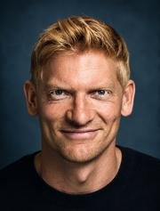

Om mig
Niels Kragbak
Jeg interesserer mig for politik, natur, teknologi, organisationer og for, hvordan mennesker får store idéer til at fungere i den virkelige verden.

Baggrund
Min arbejdsmæssige baggrund spænder over Forsvaret, ledelse, teknologi og projektarbejde. Jeg har tilbragt omkring 15 år i Forsvaret som soldat og officer, blandt andet med ledelse, efterretningsarbejde, stabsfunktioner og internationale udsendelser. Senere har jeg arbejdet med IT-ledelse og projektledelse i både Forsvaret og private virksomheder, hvor opgaverne blandt andet har handlet om komplekse systemer, organisatoriske forandringer og samarbejde på tværs af fagligheder og lande.
Jeg har desuden en MBA med fokus på blandt andet ledelse, strategi og forretning. Kombinationen af den militære og civile baggrund har præget den måde, jeg ser problemer på: som noget der sjældent kun handler om teknik eller kun om mennesker. Organisationer, incitamenter, kultur, magt, ressourcer og konkrete systemer hænger sammen. Det er også en væsentlig del af grunden til, at jeg interesserer mig for politik og samfundsforandring.
Hvorfor denne hjemmeside?
Fordi sociale medier er dårlige arkiver. Her kan tanker få lov til at være længere, udvikle sig over tid og hænge sammen på tværs af emner.
Politik
Jeg er politisk engageret, særligt i spørgsmål om klima, biodiversitet, økonomiske strukturer, global retfærdighed og vores langsigtede samfundsmodel. De synspunkter, der står på siden, er mine egne og kan udvikle sig, efterhånden som jeg lærer mere.